In diesem Abschnitt werden ergänzende Bestimmungen für Schalungssysteme, Schalungen und Halbfertigteile wie z. B. Elementwände, Hohlwände beschrieben.
Werden nicht systemgebundene Einzelbauteile, z. B. Einzelkonsolen für die Herstellung eines Arbeitsgerüstes verwendet, so sind im Rahmen einer erweiterten Gefährdungsbeurteilung für diesen Einsatz spezifische Schutzmaßnahmen, z. B. innerhalb einer Montageanweisung, festzulegen, die die Sicherheit der Beschäftigten gewährleisten.
Wand- und Stützenschalungen, zu denen auch Halbfertigteile zählen, müssen in jedem Zustand der Verwendung (z. B. Montage, Demontage, Lagerung) standsicher sein. Halbfertigteile müssen vor der Verwendung ausreichend ausgehärtet sein. Für den Krantransport von Halbfertigteilen und für eventuelle im Montagevorgang zwischenzeitliche zusätzliche Lasten (z. B. Aufhängung von Betonierbühnen) sind im Vorfeld geeignete Anschlagpunkte statisch nachzuweisen und festzulegen.
Im Montagezustand sind Wand- und Stützenschalungen entsprechend der Montageanweisung oder der Aufbau- und Verwendungsanleitung des Herstellers druck- und zugfest als auch gegen Abheben zu sichern. Dies ist bei der Verwendung von zusätzlichen Einrichtungen, wie z. B. Betonierbühnen oder Aussparungskörpern, ebenfalls zu beachten.
Gemäß DIN EN 12812 sind im Arbeitsbetrieb die Abstützungen von Wand- und Stützenschalungen für eine Windlast mit Staudruck q = 0,2 kN/m² bemessen. Im Ruhebetrieb nach DIN EN 12812 muss sichergestellt werden, dass
Als Anhaltswert für den Staudruck von q = 0,2 kN/m² kann man eine Windstärke 8 nach Beaufort Skala (18 m/sec entspricht 65 km/h) annehmen.
Angaben zu gegebenenfalls erforderlichen Auftriebssicherungen sind den Aufbau- und Verwendungsanleitungen der Hersteller zu entnehmen.

Siehe § 5 DGUV Vorschrift 38 "Bauarbeiten".
Werden Wand- und Stützenschalungen an Aufhängungen befestigt, müssen diese Aufhängekonstruktionen so eingebaut werden, dass grundsätzlich ein Lösen oder Ausbauen der Aufhängekonstruktionen nur von der Lasteinleitungsseite möglich ist (siehe Abb. 2).

Siehe § 5 DGUV Vorschrift 38 "Bauarbeiten".
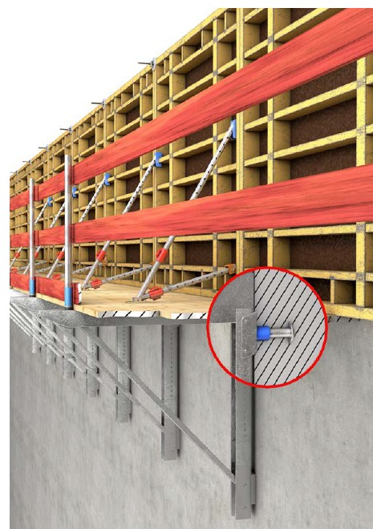
Abb. 2 Aufhängekonstruktion
An Wand- und Stützenschalungen müssen zum Betonieren Arbeitsplätze mit einer Mindestbreite von 0,60 m nach Abschnitt 5.1.1 vorhanden sein.
Zusätzlich zu Abschnitt 5.1.1 sind z. B. zum Einbauen von Schalungsankern, Verbindungsmitteln und Arbeitsebenen sichere Arbeitsplätze einzurichten (siehe Abb. 3 und 4).

Siehe § 8 DGUV Vorschrift 38 "Bauarbeiten".
Wenn eine Absturzgefährdung an Wand- und Stützenschalungen auf der gegenüberliegenden Schalungsseite oder in die Schalung besteht, ist eine Absturzsicherung vorzusehen (siehe Abb. 3 und 4).
Eine Absturzgefährdung für die Beschäftigten kann durch das Absenken der Standfläche auf der Arbeitsebene von mind. 1m unterhalb der Oberkante des Schalungselementes ebenso beseitigt werden.

Siehe § 9 DGUV Vorschrift 38 "Bauarbeiten".
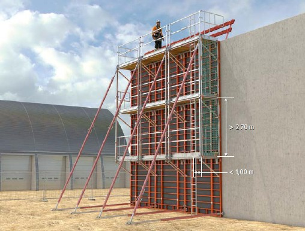
Abb. 3 Absturzsicherung und Zugang an einer Wandschalung
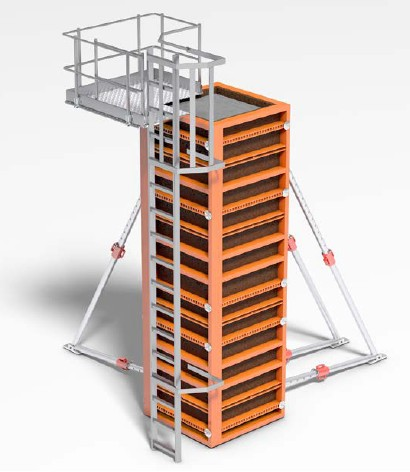
Abb. 4 Absturzsicherung und Zugang an einer Stützenschalung
Ein Zugang über eine Treppe ist zu bevorzugen (siehe Abschnitt 5.2.2). Es sind die seitens der Systemhersteller vorgesehenen Zugänge zu verwenden.
Ist der Zugang als senkrechte Leiter ausgeführt, so ist diese fest mit dem Schalungssystem zu verbinden und wird an den Montageplätzen vor Aufrichtung vormontiert. Der zu überbrückende Höhenunterschied zwischen den Arbeitsplätzen darf dabei nicht mehr als 5,00 m betragen und es darf kein Werkzeug und/oder Material von Hand mitgeführt werden.
Bei der Verwendung von senkrechten Leitern als Zugang sind keine zusätzlichen Maßnahmen gegen einen rückwärtigen Absturz erforderlich, wenn
Ist eine der zuvor beschriebenen Voraussetzungen nicht erfüllt und der Seitenschutz als Schutzmaßnahme gegen Absturz ist unwirksam, sind andere Maßnahmen zu treffen. Dies kann z. B. durch Einsatz von Netzen, erhöhtem Seitenschutz, Anbringung eines Rückenschutzkorbes erreicht werden (siehe Abb. 3 und 4).
Abweichungen hiervon sind in der Gefährdungsbeurteilung gesondert zu betrachten. Bei besonders beengten Verhältnissen ist ein Zugang über eine Anlegeleiter (siehe Abschnitt 5.2.2), die am Leiterkopf fixiert ist, zulässig.

Siehe § 8 DGUV Vorschrift 38 "Bauarbeiten".
Beim Einsatz von Hebezeugen zur Montage von Wand- und Stützenschalungen dürfen die Anschlagmittel erst gelöst werden, wenn die Abstützungen montiert sind und wirksam werden. Beim Ausschalen müssen die Schalelemente von einer ausreichenden Anzahl von Ankern oder Abstützungen gehalten werden, bis die Schalelemente an das Hebezeug angeschlagen sind.

Siehe § 5 DGUV Vorschrift 38 "Bauarbeiten".
Auf Schalelementen dürfen sich Beschäftigte während des Transports nicht aufhalten.

Siehe Anhang 1 Abschnitt 2 BetrSichV.
In diesem Abschnitt werden ergänzende Hinweise zu den allgemein beschriebenen Anforderungen an die Prüfung und Inaugenscheinnahme im Abschnitt 4.7 für Wand- und Stützenschalungen aufgeführt. Nachfolgende tabellarische Auflistung zeigt den möglichen Personenkreis auf.
Tabelle 1 Auflistung möglicher Personenkreis für die Durchführung von Prüfungen und Inaugenscheinnahmen an Wand- und Stützenschalungen mit und ohne Aufbau- und Verwendungsanleitung
| Schalungssysteme mit und ohne Aufbau- und Verwendungsanleitung | ||
| Prüfung durch zur Prüfung befähigte Personen (Prüfung gemäß § 14 Absatz 1 BetrSichV) |
Inaugenscheinnahme durch qualifizierte Personen (Kontrolle gemäß § 4 Absatz 5 Satz 3 BetrSichV) |
|
| Möglicher Personenkreis | Bauleiter und Bauleiterin, Meister und Meisterinnen, Poliere und Polierinnen, Vorarbeiter und Vorarbeiterinnen | Langjährig tätige Beschäftigte, Vorarbeiter und Vorarbeiterinnen, Poliere und Polierinnen |
Sollte der Erstellende und Nutzende ein und dasselbe Unternehmen sein, kann die erforderliche Prüfung durch eine zur Prüfung befähigte Person zeitgleich mit der Inaugenscheinnahme vor dem Gebrauch durch dieselbe Person durchgeführt werden.
In diesem Abschnitt werden ergänzende Bestimmungen für Schalungssysteme, Schalungen und Halbfertigteile wie z. B. Elementdecken, als auch Balkenschalungen, die aus Unterzugs- oder Überzugsschalungen bestehen können, beschrieben.
Werden nicht systemgebundene Einzelbauteile für Decken- und Balkenschalungen für z. B. den Lückenschluss verwendet, so sind im Rahmen einer besonderen Gefährdungsbeurteilung für diesen Einsatz spezifische Schutzmaßnahmen festzulegen, die die Sicherheit der Beschäftigten gewährleisten.
Halbfertigteile müssen vor der Verwendung ausreichend ausgehärtet sein. Für den Krantransport von Halbfertigteilen und für eventuelle im Montagevorgang zwischenzeitliche zusätzliche Lasten (z. B. Aufhängung von Betonierbühnen) sind im Vorfeld geeignete Anschlagpunkte statisch nachzuweisen und festzulegen.
Unterkonstruktionen für Decken- und Balkenschalungen sind für den Montagezustand räumlich auszusteifen.

Siehe § 5 DGUV Vorschrift 38 "Bauarbeiten".
Baustützen aus Stahl können z. B. mit Diagonalen über Kupplungen oder Verschwertungsklammern ausgesteift werden.
Aufstellhilfen für Baustützen können nicht als räumliche Aussteifung genutzt werden.
Unterkonstruktionen für Decken- und Balkenschalungen sind für die Montage, Bewehrungsarbeiten, den Betonierzustand, den daraus resultierenden horizontalen Lasten sowie den Windlasten auszusteifen.
→ Siehe Abschnitt 4.4 Montageanweisung.
Beim Auf-, Um- und Abbau sowie beim Arbeiten an und auf Decken- und Balkenschalungen sind Arbeitsplätze nach Abschnitt 5.1 einzurichten.
An Decken- und Balkenschalungen müssen bei einer vorhandenen Absturzgefährdung für die Beschäftigten Absturzsicherungen nach Abschnitt 5.3 vorhanden sein.
6.2.4.1 Decken- und Balkenschalungssysteme
Beim Einsatz von Deckenschalungssystemen sind vorrangig Systeme anzuwenden, die den Ein- und Ausbau aus der gesicherten Standposition – Aufstellebene der Tragkonstruktion von unten – heraus ermöglichen.
Die einzelnen Bauteile können hierbei mit Hilfsmitteln nach oben geschwenkt oder von unten eingelegt werden (siehe Abb. 5). Ein Einsatz dieser Systeme ist aus ergonomischen Gesichtspunkten (z. B. Einzellastgewichte der Bauteile, Einhängehöhe der Bauteile, Einzelabmessungen der Deckenbauteile oder der Deckenpaneele) nur für bestimmte Deckenhöhenbereiche durchführbar. Der jeweilige Hersteller des eingesetzten Schalungssystems legt dabei die Einsatzgrenzen seines Systems in der Aufbau- und Verwendungsanleitung fest.
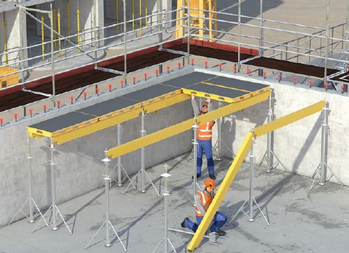
Abb. 5 Aufbau eines Deckenschalungssystems aus einer gesicherten Standposition.
Ist der Einsatz aus der sicheren Standposition nicht möglich, so sind Arbeitsmittel, z. B. fahrbare Hubarbeitsbühnen oder fahrbare Arbeitsbühnen oder andere geeignete Hilfsmittel, die den Aufbau von unten ermöglichen, oder Auffangeinrichtungen einzusetzen, um sicher von oben einzuschalen. Hierbei sind ausreichende Absturzsicherungen bzw. Auffangeinrichtungen sicherzustellen.
Aus geometrischen und ergonomischen Gesichtspunkten (z. B. Einzellastgewichte, Einhängehöhe, Einzelabmessungen) ist eine Aufbauvariante mit Arbeitsmitteln, z. B. fahrbare Hubarbeitsbühne oder fahrbare Arbeitsbühne, nur für bestimmte Deckenhöhen durchführbar. Der jeweilige Hersteller des eingesetzten Schalungssystems legt dabei die Einsatzgrenzen seines Systems in der Aufbau- und Verwendungsanleitung fest.
Auffangeinrichtungen sind z. B. Auffanggitter, Schutznetze (Sicherheitsnetze) oder fahrbare Gerüste nach DIN 4420-3, die einen tieferen Absturz verhindern.
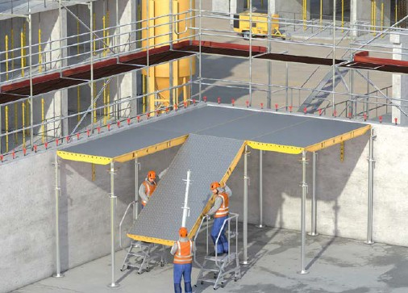
Abb. 6a Aufbau von Deckenschalungssystemen mittels Podesttreppe
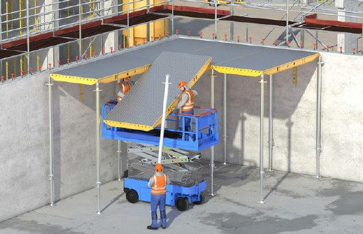
Abb. 6b Aufbau von Deckenschalungssystemen mittels Hubarbeitsbühne
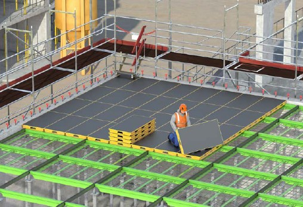
Abb. 6c Aufbau von Deckenschalungssystemen mittels eingelegten Gitterelementen
Ist aus arbeitstechnischen Gründen – z. B. Systemgeometrie, Zugänglichkeit von der sicheren Standposition – oder an Störstellen (z. B. Stahlbetonstütze durchdringt einzuschalende Fläche, vorhandene Bodenvertiefungen oder eine Vielzahl von Stützelementen unter der einzuschalenden Ebene "Stützenwald") ein Einsatz der zuvor beschriebenen absturzsichernden Maßnahmen an Deckenschalungssystemen nicht möglich, ist PSAgA mit geeigneten Anschlagmöglichkeiten oder -einrichtungen nach Abschnitt 5.3.3 einzusetzen.
→ Siehe Abschnitt 3.3, Abb. 1 "Rangfolge der Schutzmaßnahmen bei der Erstellung von Schalungen, Tragkonstruktionen und Traggerüsten".
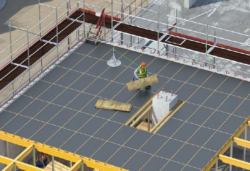
Abb. 7a Aufbau von Deckenschalungssystemen unter Verwendung von PSAgA bei vorhandener Störstelle (Stützendurchbruch durch Deckenpaneele)
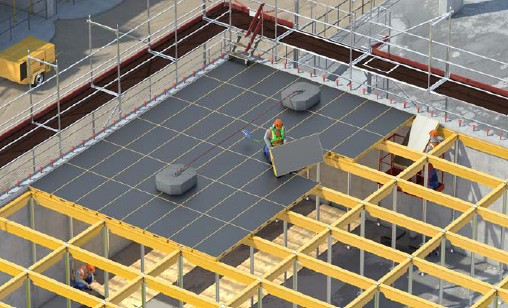
Abb. 7b Aufbau von Deckenschalungssystemen unter Verwendung von PSAgA/Rückhaltesystem bei vorhandenen Störstellen (Bodenvertiefungen)
Des Weiteren ist der Einsatz von Deckenschaltischen möglich. Der Ein- und Ausbau ist z. B. mit geeigneten Lastaufnahmeeinrichtungen aus der gesicherten Standposition (Aufstellebene der Tragkonstruktion) heraus durchzuführen.
Hierbei sollten vorzugsweise z. B. die Stützelemente der Deckenschaltische für den Versatz der Elemente weggeklappt oder ausgebaut werden.
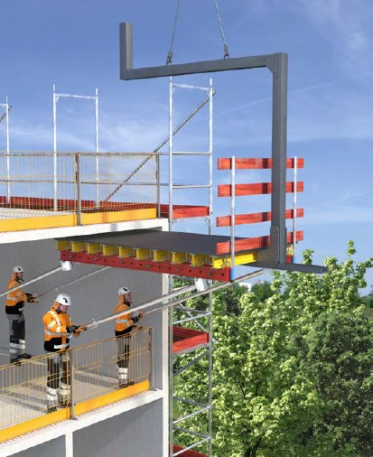
Abb. 8 Schaltisch mit integriertem Seitenschutz und klappbaren Stützelementen
6.2.4.2 Decken- und Balkenschalungen aus Einzelbauteilen
Die in diesem Abschnitt betrachteten Decken- und Balkenschalungen aus Einzelbauteilen sind nicht an ein festes Systemrastermaß gebunden und können geometrisch flexibel angeordnet werden.
Beim Einsatz von Schalungen aus Einzelbauteilen ist, sofern möglich, vorrangig ein Ein- und Ausbau aus der gesicherten Standposition – Aufstellebene der Tragkonstruktion – anzuwenden (siehe Abb. 9 und 10). Dies ist insbesondere beim Verlegen der ersten Platten zu beachten.
Dabei werden die Einzelbauteile der Schalung z. B. aus einer fahrbaren Hubarbeitsbühne, fahrbaren Arbeitsbühne oder mit anderen geeigneten Hilfsmitteln auf- und abgebaut.
Für das Verlegen von Schalungsplatten von oben ist eine Absturzgefährdung für die Beschäftigten durch Verlegen der Träger oder anderer geeigneter Hilfsmittel auf einen lichten Abstand von max. 30 cm zu verringern. Diese Träger oder andere geeignete Hilfsmittel sind gegen Verschieben zu sichern. Ist dies nicht möglich, sind andere geeignete absturzsichernde Maßnahmen zu ergreifen (technische Maßnahmen, nachrangig Einsatz von PSAgA).
Das Verlegen der Schalungsplatten muss mit einem Sicherheitsabstand von 2,00 m zur Absturzkante (z. B. Querträgerende) erfolgen, sofern keine anderen Maßnahmen gegen Absturz umgesetzt werden können.
→ Siehe Abschnitt 5.3.4.
Um eine Lageänderung oder ein Umkippen beim Verlegen der Träger zu verhindern, sind z. B. die vom Hersteller in der Aufbau- und Verwendungsanleitung vorgesehenen Zusatzelemente für die Fixierung der Querträger einzusetzen (siehe Abb. 9).
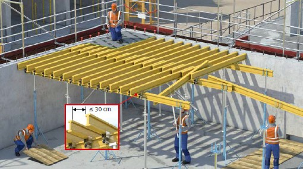
Abb. 9 Verlegen von Schalungsplatten von oben ohne Einsatz von PSAgA, lichter Querträgerabstand ≤ 30 cm.
Sicherung der Querträger gegen Kippen durch Trägerkippsicherung oder im weiteren Verlauf des Verlegens durch Vernageln der Schalhaut.
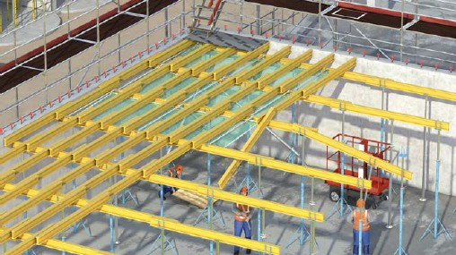
30 cm." />Abb. 10 Verlegen von Schalungsplatten von oben mit Schutznetzen (Sicherheitsnetzen), lichter Querträgerabstand > 30 cm.
Ist aus arbeitstechnischen Gründen oder an Störstellen (z. B. Stahlbetonstütze durchdringt einzuschalende Fläche, vorhandene Bodenvertiefungen oder eine Vielzahl von Stützelementen unter der einzuschalenden Ebene "Stützenwald") ein Einsatz der zuvor beschriebenen absturzsichernden Maßnahmen an Decken- und Balkenschalungen aus Einzelbauteilen nicht möglich, ist PSAgA mit geeigneten Anschlagmöglichkeiten oder -einrichtungen nach Abschnitt 5.3.3 einzusetzen (siehe Abb. 11).
→ Siehe Abschnitt 3.3, Abb. 1 "Rangfolge der Schutzmaßnahmen bei der Erstellung von Schalungen, Tragkonstruktionen und Traggerüsten".
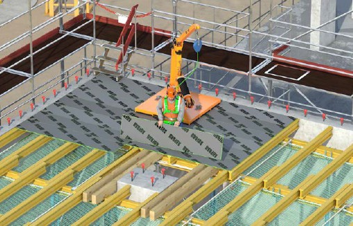
Abb. 11 Verlegen von Schalungsplatten von oben mit PSAgA an Störstellen.
6.2.5.1 Allgemein
Grundsätzlich muss für den Auf-, Um- und Abbau von Stützentürmen und Rahmenstützen eine Montageanweisung (siehe Abschnitt 4.4) vorhanden sein. Die Aufbau- und Verwendungsanleitung des jeweiligen Herstellers bildet eine der Grundlagen zur Aufstellung einer Montageanweisung. Sie muss gegebenenfalls um weitere Angaben, z. B. zu Bauzwischenzuständen und zur Wind- und Kippsicherung während des Auf-, Um- und Abbaus, ergänzt werden.
6.2.5.2 Stützentürme
Stützentürme werden üblicherweise vertikal auf-, um- und abgebaut. Für den Auf-, Um- und Abbau sind systemintegrierte sichere Arbeitsplätze, Verkehrswege und Absturzsicherungen einzusetzen.
Abhängig von der Turmkonstruktion ist bis zu bestimmten Turmhöhen ein horizontaler Aufbau an einem Montageplatz möglich. In diesem Fall müssen für den Aufbau der Schalungskonstruktion sowie für Um- und Abbau Arbeitsplätze nach Abschnitt 5.1, Verkehrswege nach Abschnitt 5.2 und Absturzsicherungen nach Abschnitt 5.3 eingerichtet werden.
6.2.5.3 Rahmenstützen
Ein horizontaler Aufbau der Rahmenstützen ist zu bevorzugen.
Der horizontale Aufbau erfolgt an einem ebenen Montageplatz. Für den weiteren Auf-, Um- und Abbau müssen Arbeitsplätze nach Abschnitt 5.1, Verkehrswege nach Abschnitt 5.2 und Absturzsicherungen nach Abschnitt 5.3 eingerichtet sein.
Eine vertikale Aufbauvariante der Rahmenstützen ist in der Gefährdungsbeurteilung zu berücksichtigen. Die erforderlichen Maßnahmen sind in der Montageanweisung darzustellen.
6.2.5.4 Verkehrswege beim Auf-, Um- und Abbau von Stützentürmen und Rahmenstützen
Verkehrswege müssen grundsätzlich nach Abschnitt 5.2 eingerichtet werden.
Davon kann im begründeten Einzelfall im Rahmen einer Gefährdungsbeurteilung abgewichen werden, wenn Verkehrswege so eingerichtet sind, dass sie entsprechend der Art der baulichen Anlage und den jeweils auszuführenden Tätigkeiten in ausreichenden Abmessungen und vollflächig ausgelegt ein sicheres Begehen ermöglichen.
Eine Abweichung kann z. B. erforderlich werden, wenn Breiteneinschränkungen durch Trägerlagen, Einbauten, angrenzende anderweitige bauliche Einrichtungen oder zu geringe Aufstiegsbreiten innerhalb von Lastturm- und Rahmenstützen sowie Lichtraumprofile vorhanden sind.
Bei der Montage und Demontage von Zugängen zu Montagestellen ist für begründete Einzelfälle im Rahmen der Gefährdungsbeurteilung abzuwägen, ob die Montage und Demontage von Seitenschutz oder Auffangeinrichtungen an Zugängen ein größeres Gefahrenpotential mit sich bringen als der kurzzeitige Einsatz der durch PSAgA gesicherten Beschäftigten.
Begründete Einzelfälle sind z. B.:
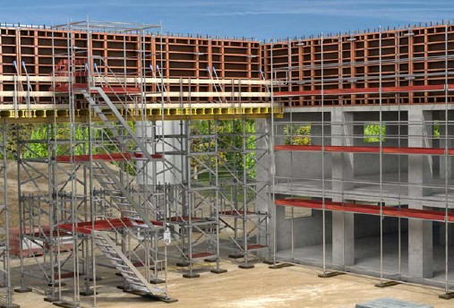
Abb. 12 Verkehrsweg an und auf Tragkonstruktion.
In diesem Abschnitt werden ergänzende Hinweise zu den allgemein beschriebenen Anforderungen an die Prüfung und Inaugenscheinnahme im Abschnitt 4.7 für Decken- und Balkenschalungen aufgeführt. Nachfolgende tabellarische Auflistung zeigt den möglichen Personenkreis auf.
Tabelle 2 Auflistung möglicher Personenkreis für die Durchführung von Prüfungen und Inaugenscheinnahmen an Decken- und Balkenschalungen mit und ohne Aufbau- und Verwendungsanleitung
| Schalungssysteme mit und ohne Aufbau- und Verwendungsanleitung | ||
| Prüfung durch zur Prüfung befähigte Personen (Prüfung gemäß § 14 Absatz 1 BetrSichV) |
Inaugenscheinnahme durch qualifizierte Personen (Kontrolle gemäß § 4 Absatz 5 Satz 3 BetrSichV) |
|
| Möglicher Personenkreis | Bauleitende Personen, Meister und Meisterinnen, Poliere und Polierinnen, Vorarbeiter und Vorarbeiterinnen | Langjährig tätige Beschäftigte, Vorarbeiter und Vorarbeiterinnen, Poliere und Polierinnen |
Sollte der oder die Erstellende und Nutzende ein und dasselbe Unternehmen sein, kann die erforderliche Prüfung durch eine zur Prüfung befähigte Person zeitgleich mit der Inaugenscheinnahme vor dem Gebrauch durch dieselbe Person durchgeführt werden.
In diesem Abschnitt werden ergänzende Bestimmungen für Gleit- und Kletterschalungen beschrieben. Diese Schalungen bestehen aus systembehafteten Elementen, die selbstkletternd sind, nicht selbstkletternd (kranbar) sind oder wie bei Gleitschalungen im 24 Std.-Schichtbetrieb ablaufen.
Der Auf-, Um- und Abbau sowie der Gebrauch von Gleit- und Kletterschalungen darf nur durch auf der Baustelle unterwiesenes Personal erfolgen.
Der Brauchbarkeitsnachweis für Gleit- und Kletterschalungen erfolgt grundsätzlich nach Abschnitt 4.1 auf Grundlage der herstellerspezifischen Aufbau- und Verwendungsanleitungen.
Abhängig von den Bauwerksgeometrien können Abweichungen von den Vorgaben der Aufbau- und Verwendungsanleitung nötig sein. In diesem Fall wird die Konstruktion der Gleit- oder Kletterschalung spezifisch geplant und nachgewiesen.
Abweichungen können bspw. sein:
Abweichend von Abschnitt 5.1 müssen Arbeitsplätze, die zusätzlich als Zwischenlager für Bewehrungsstahl verwendet werden, mindestens wie Gerüste der Lastklasse 4 (300 kg/m²) nach DIN EN 12811-1 bemessen und ausgeführt sein. Des Weiteren ist darauf zu achten, dass die vorhandenen Verkehrswege erhalten bleiben.
Nach Angaben des Herstellers oder in begründeten Fällen kann eine niedrigere Lastklasse angesetzt werden, wenn hierfür die Standsicherheit der Konstruktion nachgewiesen ist, siehe Abschnitt 4.1. Dabei ist sicherzustellen, dass die zulässige Materialbelastung und die zulässige Personenanzahl eindeutig erkennbar sind.
Begründete Fälle sind z. B.:
Anlegeleitern an Schalung zur Ankerbedienung sind nur zulässig, wenn
Ein Zugang über eine Treppe auf die Gleit- und Kletterschalung ist zu bevorzugen.
Arbeitsplätze an turmartigen baulichen Anlagen mit mehr als 60 m Höhe im Endzustand müssen über Personenaufzüge erreichbar sein, sobald Arbeitsplätze mehr als 20 m über dem umgebenden Gelände liegen.

Siehe DGUV Information 201-055 "Feuerfest-, Turm- und Schornsteinbau".
Innerhalb der Gleit- und Klettersysteme sind die seitens der Systemhersteller vorgesehenen Zugänge zu verwenden. Ist der Zugang als senkrechte Leiter ausgeführt, so ist diese fest mit dem Klettersystem zu verbinden und wird an den Montageplätzen vor Aufrichtung vormontiert. Der zu überbrückende Höhenunterschied zwischen den Arbeitsplätzen darf dabei nicht mehr als 5,00 m betragen und es darf kein Werkzeug und/oder Material von Hand mitgeführt werden.
Bei der Verwendung von senkrechten Leitern als Zugang sind keine zusätzlichen Maßnahmen gegen einen rückwärtigen Absturz erforderlich, wenn
Ist eine der zuvor beschriebenen Voraussetzungen nicht erfüllt und der Seitenschutz als Schutzmaßnahme gegen Absturz unwirksam, sind andere Maßnahmen zu treffen. Dies kann z. B. durch Einsatz von Netzen, erhöhtem Seitenschutz oder Anbringung eines Rückenschutzkorbes erreicht werden (siehe Abb. 3 und 4).
Abweichungen hiervon sind in der Gefährdungsbeurteilung gesondert zu betrachten. Bei besonders beengten Verhältnissen ist ein Zugang über eine Anlegeleiter (siehe Abschnitt 5.2.2), die am Leiterkopf fixiert ist, zulässig.
Besonders beengte Verhältnisse können sich z. B. ergeben bei

Siehe § 8 DGUV Vorschrift 38 "Bauarbeiten".
Bei Gefährdungen durch herabfallende Gegenstände von Gleit- und Kletterschalungen müssen Schutzmaßnahmen geplant und im Rahmen der Gefährdungsbeurteilung getroffen werden.
Schutzmaßnahmen können bspw. sein:
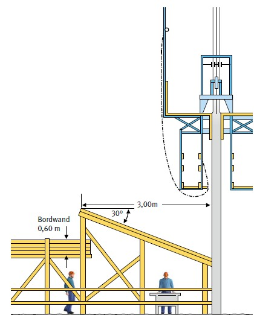
Abb. 13 Schutz gegen herabfallende Gegenstände bei Gleit- und Kletterschalungen.

Siehe auch DGUV Regel 101-011 "Einsatz von Schutznetzen (Sicherheitsnetzen)".
Ausnahmen für Montagearbeiten (Ankerstellen, Einbauteile etc.) sind möglich:
Tabelle 3 Radius des Gefahrenbereichs um die jeweiligen Arbeitsplätze
| Jeweilige Höhe h der baulichen Anlage (m) | Erforderlicher Radius abhängig von h | Erforderlicher Mindestradius in m |
| h bis 60 | h/5 | 8,00* |
| h > 60 bis 100 | h/5 | 12,50 |
| h > 100 bis 150 | h/6 | 20,00 |
| h > 150 bis 200 | h/7 | 25,00 |
| h > 200 | h/8 | 30,00 |
* Abweichend kann der erforderliche Mindestradius im Rahmen der Gefährdungsbeurteilung festgelegt werden. Siehe ASR A2.1 "Schutz vor Absturz und herabfallenden Gegenständen, Betreten von Gefahrenbereichen".

Siehe DGUV Information 201-055 "Feuerfest-, Turm- und Schornsteinbau", Kap. 4.9.3.
Bei Bewehrungsarbeiten auf Gleitschalungen muss ein Hinauskippen der Bewehrung über die Arbeitsebene hinaus durch konstruktive Maßnahmen verhindert werden.
Dies kann z. B. erreicht werden durch eine Bewehrungsabstützung am Gleitbock oder einen erhöhten Seitenschutz aus Gerüstrohr, der mindestens in Höhe der halben Bewehrungsstahllänge eingebaut ist.
Beim Einsatz von Hebezeugen zur Montage von Gleit- und Kletterschalungen dürfen die Anschlagmittel erst gelöst werden, wenn die Abstützungen oder Aufhängungen wirksam werden.
Beim Ausschalen muss die jeweilige Versetzeinheit von einer ausreichenden Anzahl von Ankern, Abstützungen oder Aufhängungen gehalten werden, bis die Gleit- oder Kletterschalung an das Hebezeug angeschlagen ist.
Während des Transportes von Versetzeinheiten mit dem Hebezeug dürfen sich keine Beschäftigten und keine losen Gegenstände auf den Schalungseinheiten befinden.
Werden Gleit- oder Kletterschalungen an Aufhängungen befestigt, dürfen diese Aufhängekonstruktionen nur so eingebaut werden, dass grundsätzlich ein Lösen oder Ausbauen der Aufhängekonstruktion nur von der Lasteinleitungsseite (Schalungsseite) möglich ist (siehe Abb. 14). Die Gleit- oder Kletterschalungen dürfen erst belastet werden, wenn die Aufhängekonstruktionen tragfähig verankert und verbunden sind.
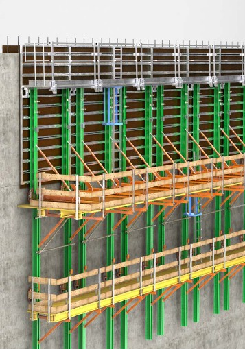
Abb. 14 Kletterschalungen und Aufhängekonstruktionen (Kletterkonen)
In diesem Abschnitt werden ergänzende Hinweise zu den allgemein beschriebenen Anforderungen an die Prüfung und Inaugenscheinnahme im Abschnitt 4.7 für Gleit- und Kletterschalungen aufgeführt. Nachfolgende tabellarische Auflistung zeigt den möglichen Personenkreis auf.
Tabelle 4 Auflistung möglicher Personenkreis für die Durchführung von Prüfungen und Inaugenscheinnahmen an Gleit- und Kletterschalungen
| Gleit- und Kletterschalungen | ||
| Prüfung durch zur Prüfung befähigte Personen (Prüfung gemäß § 14 Absatz 1 BetrSichV) |
Inaugenscheinnahme durch qualifizierte Personen (Kontrolle gemäß § 4 Absatz 5 Satz 3 BetrSichV) |
|
| Möglicher Personenkreis | Ingenieure und Ingenieurinnen, Bauleiter und Bauleiterinnen, Meister und Meisterinnen, Poliere und Polierinnen, Vorarbeiter und Vorarbeiterinnen | Langjährig tätige Beschäftigte, Vorarbeiter und Vorarbeiterinnen, Poliere und Polierinnen |
Sollte der Erstellende und Nutzende ein und dasselbe Unternehmen sein, kann die erforderliche Prüfung durch eine zur Prüfung befähigte Person zeitgleich mit der Inaugenscheinnahme vor dem Gebrauch durch dieselbe Person durchgeführt werden.
In diesem Abschnitt werden ergänzende Bestimmungen für Tragkonstruktionen und Traggerüste beschrieben, die nicht in Abschnitt 6.2.5 enthalten sind.
Die Anforderungen und Verfahren für die Bemessung von Traggerüsten sind in der DIN EN 12812 beschrieben. Notwendige Maßnahmen zur Gewährleistung des Arbeits- und Gesundheitsschutzes werden auch z. B. in der DIN EN 12811-1 und weiteren Dokumenten behandelt. Für die Koordination, die Überwachung und die Prüfung von Traggerüsten sind darüber hinaus die Anforderungen aus dem Bauordnungsrecht, z. B. Landesbauordnungen, abhängig von Bauwerksklassen, der Baustellenverordnung oder zusätzliche technische Vertragsbedingungen und Richtlinien für Ingenieurbauten (ZTV-ING) und weitere bauvertraglich vereinbarte Regelwerke zugrunde zu legen. Aus diesen Regelungen ergeben sich die jeweils handelnden Personen, deren Qualifikationen und der Dokumentationsumfang.
Die grundsätzliche Koordination obliegt gemäß Bauordnungsrecht und Baustellenverordnung der Bauherrschaft oder deren Vertreter, z. B. ein eingesetzter Entwurfsverfassender. Traggerüste müssen durch eine von der Bauherrschaft eingesetzte fachkundige Person, z. B. Koordinator oder Koordinatorin nach ZTV-ING, insbesondere auf Hilfsfundamente, Gründung, Stauchung, Höhenausgleich, Schalung koordiniert werden. Die Dokumentation erfolgt in den Ausführungsunterlagen, z. B. im Ausführungsprotokoll.

Siehe hierzu z. B. DIN EN 12812, Anhang A. Aus den Anforderungen der Bauaufsichtsämter kann hierzu der Einsatz einer Prüfingenieurin oder eines Prüfingenieurs notwendig werden.
→ Siehe hierzu auch Abschnitt 4.1.
Zur Prüfung befähigte Person siehe Abschnitt 6.4.9.

Siehe hierzu z. B. Teil 6 Zusätzliche Technische Vertragsbedingungen und Richtlinien für Ingenieurbauten (ZTV-ING).
Beim Auf-, Um- und Abbau von Traggerüsten müssen Verkehrswege zu Arbeitsplätzen und Montagestellen über sicher begehbare Bauteile oder durch geeignete Hilfsmittel zu erreichen sein.
Sicher begehbare Bauteile und geeignete Hilfsmittel können in Abhängigkeit von Art und Umfang der auszuführenden Arbeiten z. B. sein:
Bei der Nutzung von Verkehrswegen zu Montagestellen ist für begründete Einzelfälle im Rahmen der Gefährdungsbeurteilung abzuwägen, ob die Montage und Demontage von Zugängen ein größeres Gefahrenpotential mit sich bringen als der kurzzeitige Einsatz der durch PSAgA gesicherten Beschäftigten.
Begründete Einzelfälle sind z. B.:
Beim Auf-, Um- und Abbau von Traggerüsten sind grundsätzlich Arbeitsplätze nach Abschnitt 5.1 einzurichten.
Davon kann im begründeten Einzelfall im Rahmen einer Gefährdungsbeurteilung abgewichen werden, wenn Arbeitsplätze so eingerichtet sind, dass sie entsprechend der Art der baulichen Anlage und den jeweils auszuführenden Tätigkeiten in ausreichenden Abmessungen und vollflächig ausgelegt ein sicheres Arbeiten ermöglichen.
Eine Abweichung kann z. B. erforderlich werden, wenn Breiteneinschränkungen durch Trägerlagen, Einbauten, angrenzende anderweitige bauliche Einrichtungen, zu geringe Aufstiegsbreiten innerhalb von Tragkonstruktionen sowie Lichtraumprofile vorhanden sind.
Montagestellen müssen bei
Abweichend dazu darf im begründeten Einzelfall im Rahmen einer Gefährdungsbeurteilung die Mindestbreite unterschritten werden, wenn dieses aus baulichen Gegebenheiten erforderlich ist.
Bauliche Gegebenheiten sind z. B. Breiteneinschränkungen durch Trägerlagen, Einbauten, angrenzende anderweitige bauliche Einrichtungen, zu geringe Aufstiegsbreiten innerhalb von Tragkonstruktionen sowie Lichtraumprofile.
Beim Auf-, Um- und Abbau von Traggerüsten müssen für Arbeitsplätze, Montagestellen und deren Zugänge bei einer vorhandenen Absturzgefährdung für Beschäftigte geeignete Maßnahmen zur Sicherung gegen Absturz festgelegt werden. Bei der Auswahl und Festlegung der Maßnahmen ist deren Einsatzmöglichkeit in Abhängigkeit von der Art und dem Fortgang der jeweils auszuführenden Tätigkeiten sowie den baulichen Erfordernissen entsprechend der Rangfolge nach Abschnitt 5.3 zu überprüfen.

Siehe § 9 DGUV Vorschrift 38 "Bauarbeiten". Geeignete Maßnahmen für kurzzeitige Montage-, Kontroll- und Demontagearbeiten durch Fachpersonal sind z. B. die Sicherung durch Bauteile des Traggerüstes oder gleichwertige Maßnahmen, die Verwendung von Persönlicher Schutzausrüstung gegen Absturz.
Für Traggerüste muss eine schriftliche Montageanweisung nach Abschnitt 4.4 auf der Baustelle vorliegen.

Siehe § 4 DGUV Vorschrift 38 "Bauarbeiten" und ergänzende Unterlagen, z. B. zusätzliche Technische Vertragsbedingungen und Richtlinien für Ingenieurbauten ZTV-ING.
Die Übersichtszeichnung nach DIN EN 12812, ergänzt um sicherheitstechnische Angaben nach Abschnitt 5.4.1 dieser DGUV Regel, erfüllt z. B. die Anforderungen an eine Montageanweisung.
Traggerüste sind gegen unmittelbaren Anprall von Fahrzeugen des Baustellen- und öffentlichen Verkehrs zu schützen und ausreichende Sicherheitsabstände einzurichten.
Dies gilt auch, wenn z. B. während der Herstellung des Bauwerks gleichlaufend mit einer Erdbaustelle Transporte in dafür vorgesehenen Verkehrsräumen erfolgen sollen.
Als Schutz gegen unmittelbaren Anprall können z. B.
vorgesehen werden
Anforderungen an Arbeitsplätze und Verkehrswege siehe ASR A5.2 "Anforderungen an Arbeitsplätze und Verkehrswege auf Baustellen im Grenzbereich zum Straßenverkehr-Straßenbaustellen". Anforderungen an Leiteinrichtungen siehe ZTV SA 97 (zusätzliche technische Vertragsbedingungen und Richtlinien für Sicherungsarbeiten an Arbeitsstellen an Straßen).
Eine Vormontage von Traggerüstelementen auf einem Montageplatz ist bei der Planung der Maßnahme zu bevorzugen.
Bei systemgebundenen Bauteilen sind die Angaben des Herstellers in der jeweiligen Aufbau- und Verwendungsanleitung zu berücksichtigen.
Die Vormontage auf dem Montageplatz kann auch in einzelnen Segmenten erfolgen, die dann zusammengesetzt werden.
Bei der Vormontage sind die max. zulässigen Längen der zusammengesetzten Stützenelemente zu beachten.
Ist eine Vormontage von Bauteilen und Baugruppen sowie deren Verbindungselemente auf einem Montageplatz, z. B. aus bautechnischen Gründen, nicht möglich, sind für den Auf-, Um- und Abbau in Abhängigkeit der örtlichen Gegebenheiten Arbeitsplätze, Verkehrswege und Absturzsicherungen nach den Abschnitten 6.4.2 bis 6.4.5 einzurichten.
In diesem Abschnitt werden ergänzende Hinweise zu den allgemein beschriebenen Anforderungen an die Prüfung und Inaugenscheinnahme im Abschnitt 4.7 für Tragkonstruktionen und Traggerüste aufgeführt. Nachfolgende tabellarische Auflistung zeigt den möglichen Personenkreis auf.
Tabelle 5 Auflistung möglicher Personenkreis für die Durchführung von Prüfungen und Inaugenscheinnahmen an Tragkonstruktionen und Traggerüsten mit und ohne Aufbau- und Verwendungsanleitung
| Tragkonstruktionen und Traggerüste mit und ohne Aufbau- und Verwendungsanleitung | ||
| Prüfung durch zur Prüfung befähigte Personen (Prüfung gemäß § 14 Absatz 1 BetrSichV) |
Inaugenscheinnahme durch qualifizierte Personen (Kontrolle gemäß § 4 Absatz 5 Satz 3 BetrSichV) |
|
| Möglicher Personenkreis | Ingenieure und Ingenieurinnen, Bauleiter und Bauleiterinnen, Meister und Meisterinnen, Poliere und Polierinnen, Vorarbeiter und Vorarbeiterinnen | Langjährig tätige Beschäftigte, Vorarbeiter und Vorarbeiterinnen, Poliere und Polierinnen |
Sollte der Erstellende und Nutzende ein und dasselbe Unternehmen sein, kann die erforderliche Prüfung durch eine zur Prüfung befähigte Person zeitgleich mit der Inaugenscheinnahme vor dem Gebrauch durch dieselbe Person durchgeführt werden.
Arbeitsplätze an und auf Brückenkappen sind mit Absturzsicherungen ab einer Absturzhöhe von 1,00 m auszurüsten. Es sind dabei nur Einrichtungen nach den Abschnitten 5.3.1 bis 5.3.3 vorzusehen.

Siehe § 9 DGUV Vorschrift 38 "Bauarbeiten".
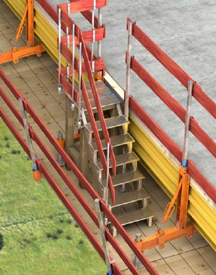
Abb. 15 Brückenkappe mit Absturzsicherungen aufgrund von erhöhter Verletzungsgefahr beim Fall auf Gegenstände.
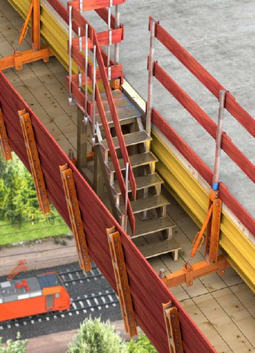
Abb. 16 Brückenkappe mit geschlossenem Seitenschutz (Volleinhausung) als Schutz gegen herabfallende Gegenstände (bspw. Bundesautobahn, Bahnstrecke)
Arbeitsplätze auf dem Konsolgerüst von Gesimskappenschalungen sind grundsätzlich mindestens mit Lastklasse 3 (200 kg/m²) nach DIN EN 12811-1 zu bemessen.
Nach Angaben des Herstellers oder in begründeten Fällen kann eine niedrigere Lastklasse angesetzt werden, wenn hierfür die Standsicherheit der Konstruktion nachgewiesen ist, siehe Abschnitt 4.1. Dabei ist sicherzustellen, dass die zulässige Materialbelastung und die zulässige Personenanzahl eindeutig erkennbar sind.
Begründete Fälle sind beispielsweise:
Bei Abbrucharbeiten müssen ausreichend tragfähige und standsichere Arbeitsplätze zur Verfügung stehen.
Weitere beispielhafte Anforderungen bei Abbrucharbeiten:

Siehe DGUV Vorschrift 38 "Bauarbeiten", DGUV Regel 101-603 "Branche Abbruch und Rückbau".
In diesem Abschnitt werden ergänzende Hinweise zu den allgemein beschriebenen Anforderungen an die Prüfung und Inaugenscheinnahme im Abschnitt 4.7 von Schalungen für Brückenkappen aufgeführt. Nachfolgende tabellarische Auflistung zeigt den möglichen Personenkreis auf.
Tabelle 6 Auflistung möglicher Personenkreis für die Durchführung von Prüfungen und Inaugenscheinnahmen an Schalungen für Brückenkappen mit und ohne Aufbau- und Verwendungsanleitung
| Schalungen für Brückenkappen mit und ohne Aufbau- und Verwendungsanleitung | ||
| Prüfung durch zur Prüfung befähigte Personen (Prüfung gemäß § 14 Absatz 1 BetrSichV) |
Inaugenscheinnahme durch qualifizierte Personen (Kontrolle gemäß § 4 Absatz 5 Satz 3 BetrSichV) |
|
| Möglicher Personenkreis | Ingenieure und Ingenieurinnen, Bauleiter und Bauleiterinnen, Meister und Meisterinnen, Poliere und Polierinnen, Vorarbeiter und Vorarbeiterinnen | Langjährig tätige Beschäftigte, Vorarbeiter und Vorarbeiterinnen, Poliere und Polierinnen |
Sollte der Erstellende und Nutzende ein und dasselbe Unternehmen sein, kann die erforderliche Prüfung durch eine zur Prüfung befähigte Person zeitgleich mit der Inaugenscheinnahme vor dem Gebrauch durch dieselbe Person durchgeführt werden.